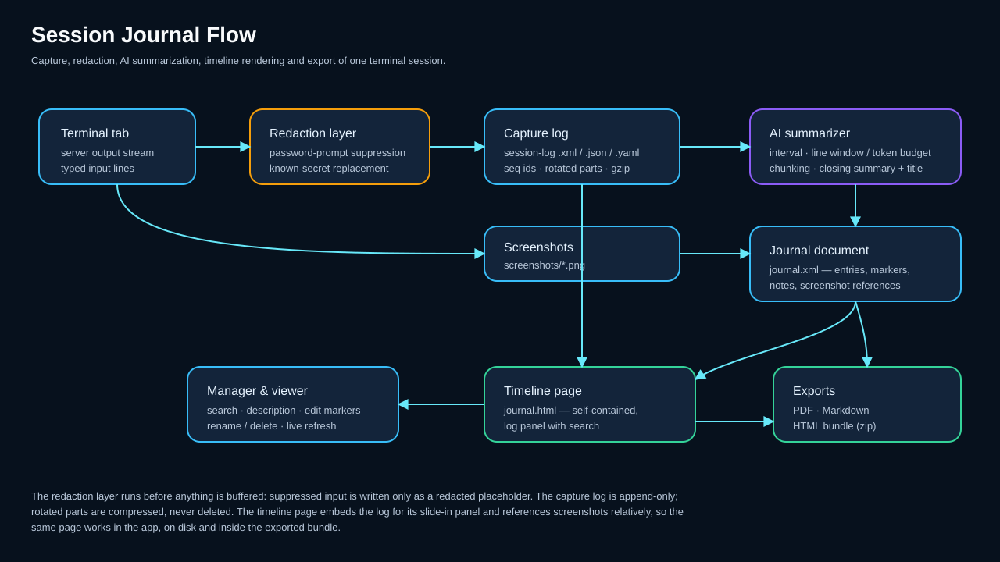
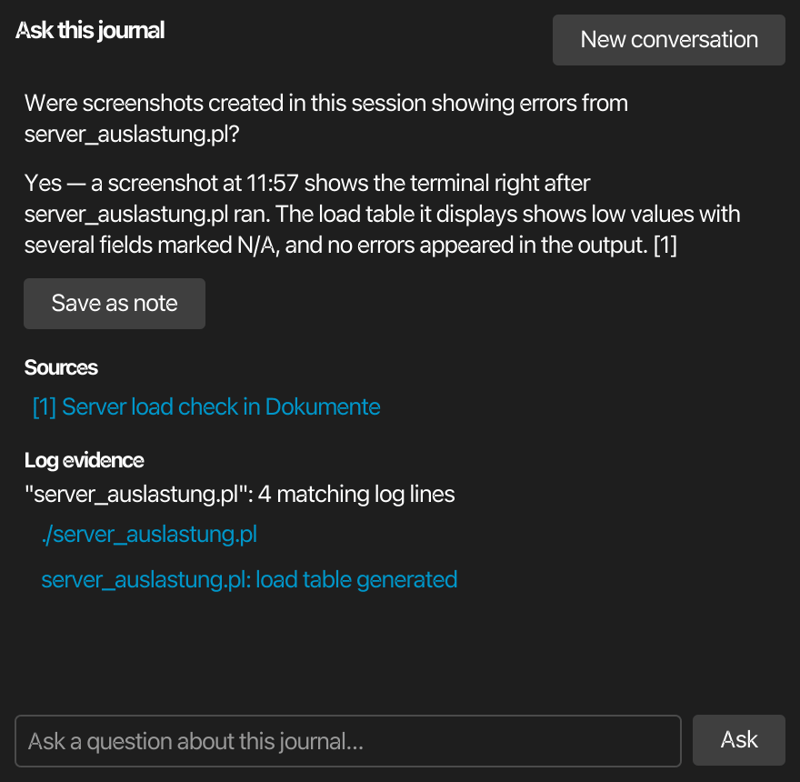
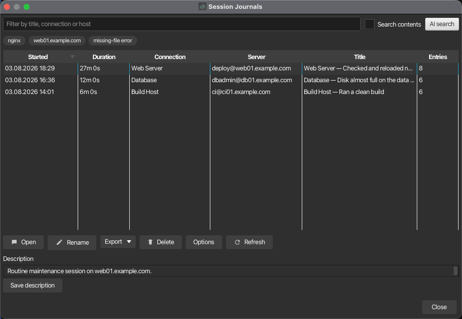
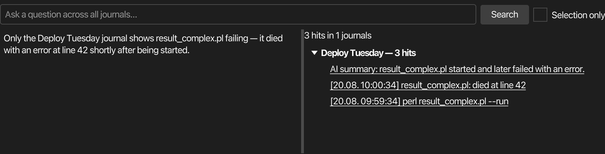
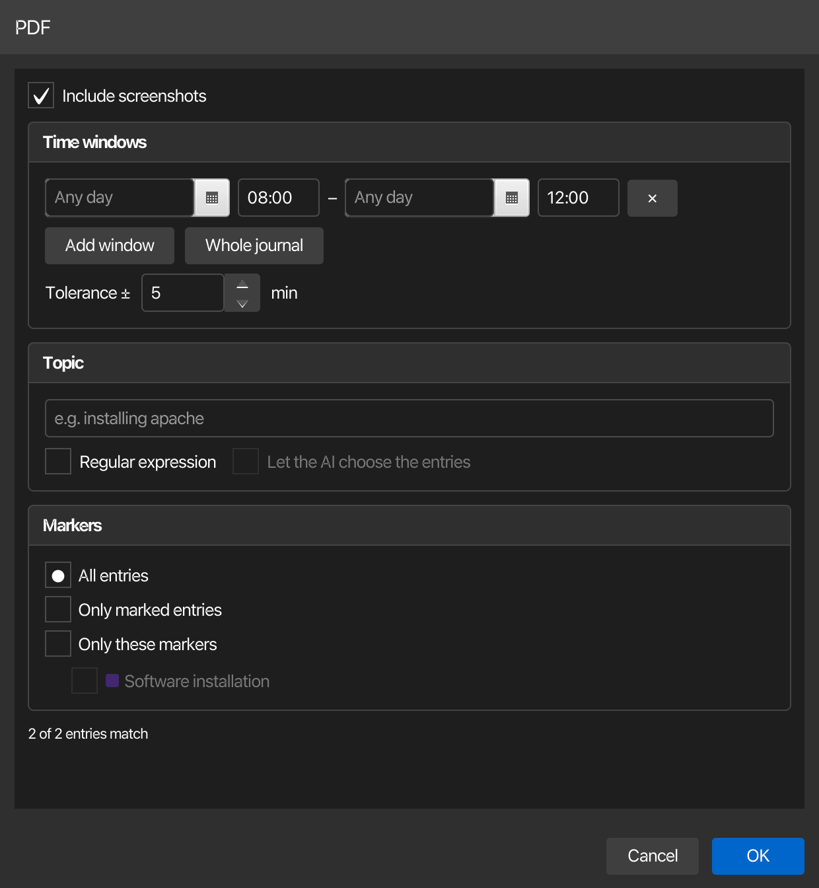

Session journal¶
The session journal documents a terminal session as a readable timeline: every server output line and every command you type is written to a capture log, an AI periodically condenses the activity into short journal entries, and the result is rendered as a self-contained HTML page with connection details, color-coded excerpts, screenshots and your own notes. Journals are managed like saved chats — in their own manager window with search, editing and export.

Storage and formats¶
Each journal is one self-contained directory under ~/.kortty/journals (configurable in Settings > Logging > Session Journal):
| File | Purpose |
|---|---|
journal.xml |
The curated journal document: metadata, AI summaries, markers, notes, screenshot references |
session-log.json / .xml / .yaml |
The append-only capture log — timestamped server output and typed input lines with sequence ids |
session-log-2.json.zst, … |
Rotated log parts; closed parts are zstd-compressed automatically, the journal never deletes history. Journals recorded by older versions keep their .gz parts and remain fully readable |
journal.html |
The generated timeline page, regenerated automatically after every change |
screenshots/*.png |
Screenshots you attached during the session |
The capture-log format is selectable in the journal manager's Options dialog: JSON (JSON Lines, the default), XML or YAML. All formats carry the same fields, and every entry is exactly one line, so a crash never corrupts more than the last line. JSON is the default because log tooling reads it without needing a parser of its own — not because it saves space. Size barely separates the three: for ordinary output XML is about 9 bytes per entry smaller, for output full of <, > and & JSON is roughly 10 % smaller (XML has to escape those, JSON does not), and once a finished part is compressed all three land within 2 % of each other. YAML is the largest, since it writes JSON mappings with a - prefix. The active log part stays uncompressed for live reads; rotation (default 25 MB per part) and session end compress finished parts to .zst (zstd — journals from older versions keep their .gz parts and open exactly as before).
Two more things keep long, noisy sessions small and complete. Consecutive identical output lines (progress loops, tail -f repeats) are coalesced syslog-style: the first occurrence is written immediately, follow-ups are counted and stored as one entry with a repeat count. The viewer shows such a run compactly as line ×12, while copying or exporting the log reproduces the original lines in full. And when server output arrives faster than the log can persist it, the capture applies backpressure instead of dropping lines — the terminal may briefly slow down under an extreme flood, but the journal stays complete.
Rotation is configurable per connection on the Journal tab: Maximum size per log part (MB) (default 25) and Maximum rotated log parts (default 20). After the configured number of parts, output capture stops with a note in the journal; input, screenshots and notes continue. An enterprise policy can cap the part count via max-log-parts.
Enabling the journal¶
Automatically for a connection¶
- Open Connections > Manage Connections and edit a connection
- On the Journal tab, enable Enable session journal for this connection
- Optionally adjust Capture typed input lines, Generate AI summaries, the per-connection Summary interval, and the rotation pair Maximum size per log part (MB) and Maximum rotated log parts
Every future connection of this server then starts its journal automatically. The journal survives reconnects — one journal per tab lifetime, with a reconnect marker in the log.
Retroactively for a running session¶
Use Tools > Start/Stop Session Journal (Ctrl+Alt+T), the tab context menu (Session Journal > Start journal) or the journal bar's Start journal button. The existing scrollback is imported into the journal as seed entries first, so the timeline covers what already happened, then live capture attaches.
The journal bar¶
While a journal is available, a bar below the terminal shows its state (Journal active since HH:MM) and offers Stop journal, Screenshot and Note:
- Screenshot (Ctrl+Alt+C, also in the terminal's right-click menu) snapshots the terminal — in a split layout, the right-click menu captures exactly the pane under the cursor — and files it into the journal timeline.
- Note opens the note editor for a free-text remark that appears as its own timeline entry at the current position.
Writing notes¶
Notes are written in the same editor everywhere they are edited — the journal bar's Note button, the live panel's, the entry form in the viewer, and the screenshot editor:
- The field holds at least six lines and the dialog can be resized, so a note can be a paragraph instead of a single line.
- Links are clickable. Any
http://orhttps://address in a note becomes a link on the journal page — click it and the address opens in your system browser, never inside the journal view. Only those two schemes ever become links, and only in text you wrote yourself: AI summaries and terminal excerpts stay literal. - Translate hands the note to the AI and replaces it with the translation in the language picked next to the button. The list offers the interface languages and any language korTTY has translations for, and it accepts a typed language it does not list. Your choice is remembered for the next note. The translation runs on the profile assigned to Text and translation profile in the AI manager — the same role the snippet editor's translation uses — falling back to your default profile when that role is unset. Internet access stays disabled for it, exactly as for the summaries; Cmd+Z / Ctrl+Z brings the original back. Without a usable AI profile the button is disabled and says so.
When the connection ends¶
A journal is bound to its tab, not to a single connection. When the connection ends while the journal is running — a reboot, a dropped network, or the server closing the session — the tab stays open and a red decision bar appears instead of the tab closing silently:
- Reconnect re-establishes the connection and the journal simply continues, with a reconnect marker in the capture log. Work that resumes after a server reboot lands in the same journal.
- End journal stops the journal and writes its closing summary (and, if enabled, the AI title) exactly like the journal bar's stop button. The tab then shows the plain reconnect bar, so reconnecting is still possible — with journaling enabled for the connection, that new session starts a fresh journal.
Closing the tab instead also ends the journal with its closing summary. Without a running journal the behavior is unchanged: a cleanly ended connection closes the tab, an error keeps it open with the reconnect bar (double-click to reconnect).
The live journal panel¶
View > Live Journal (or Ctrl+Alt+L) docks the running journal's full journal page — the same page the viewer shows — to the left or right of the terminal, kept up to date in real time. Selecting the checked side in the menu hides the panel again; the divider next to it adjusts the width, and side and width are remembered across restarts.
Two things update live while the session runs:
- The live log — the Live Log button in the panel header opens the page's log panel in follow mode, streaming the capture log as it is written: command output, the commands you typed, notes and screenshot markers, each with a timestamp. It starts hidden; lines accumulate either way, so opening it later shows everything. Scrolling up pauses following, scrolling back to the bottom resumes it, the ✕ in its corner hides it again (the button stays in sync), and dragging its top edge adjusts the height — which is remembered. The view keeps the newest 5000 lines; everything stays in the capture log and in the entry cards' log excerpts.
- The timeline — new cards (AI summaries, notes, screenshots) and edits appear moments after they happen, without losing your scroll position. A terminal AI-agent run adds its own AI agent card the moment it finishes: your prompt as the title, the agent's final answer as the body, and a meta line with the model, the run duration and the reported token count. Long answers collapse to a preview — click the text (or Show full answer) to expand. Agent work is part of the journal record even though the summarizer treats the agent's inline terminal text as noise.
Because it is the real journal page, everything the viewer's page offers works right here: click an entry card to see its log excerpt, search the journal, jump between marked entries, and right-click a screenshot to open the annotation editor (pen, box, unreadable, text and a note) or copy it — the edited picture appears in the panel as soon as you save. Right-clicking an entry offers the same marker picker as the viewer. The cards adapt to the panel width, so the text stays readable however narrow or wide you drag it.
Jumping to a time¶
The ◷ button in the page header opens a time field: type a time and the timeline scrolls to the entry closest to it and highlights it briefly. The input is lenient — 19:00, 19.00, 1900 and 19 all mean the same, and a date can be prefixed (13.08. 19:00, 13.08.2026 19:00 or 2026-08-13 19:00). Without a date the time is matched against each entry's own day, so a session running past midnight jumps to the nearest occurrence rather than always the first day.
The panel's header adds the instant controls: Note and Screenshot act on the shown journal exactly like the journal bar — a note you add appears in both the timeline and the live log — Live Log shows or hides the log view, and Open Viewer opens the full viewer window for editing, search & replace and exports. The ⋯ menu switches the page between light and dark, refreshes it, and opens the page appearance settings.
The panel follows your tabs with a memory: it shows the journal of the current tab, and when you switch tabs it only switches along if the newly selected tab also has a running journal — otherwise it keeps showing the journal it already displays. When the shown journal is stopped or its tab is closed, the page stays visible with a Journal stopped / Tab closed badge until you select another tab with a live journal.
Everything shown has already passed password protection — suppressed input and redacted secrets never reach the panel.
AI summaries¶
While the journal runs, the AI summarizer periodically reads the newest capture-log lines and appends a compact journal entry (title, summary and a suggested marker: info, important or error). Defaults and limits:
| Option | Where | Default |
|---|---|---|
| Summary interval | Settings > Logging > Session Journal (global) or per connection | 5 minutes |
| Max. terminal lines per AI evaluation | Journal manager Options | 100 |
| Token budget for context fill | Journal manager Options, visible when max lines is 0 | 130000 |
| Split backlog into multiple prompts (chunking) | Journal manager Options | off |
| AI profile for summaries | Journal manager Options or Settings > Logging > Session Journal | Default profile |
| Analyze screenshots with AI (description and tags) | Journal manager Options | on |
| Semantic journal search (embeddings) | Journal manager Options | off |
Summaries use your default AI profile unless you pick a dedicated journal profile. That choice is available in three equivalent places: the journal manager's Options dialog, Settings > Logging > Session Journal, and AI > AI Manager > Local AI next to the Text and Coding roles. The Text/Coding role profiles themselves are deliberately not used for the journal.
Setting max lines to 0 switches to context filling: the summarizer packs as many of the newest lines as fit into the configured token budget. With chunking enabled the whole backlog is processed instead of only the newest window — consecutive windows of the configured size, one AI prompt each.
Warning
Chunking can take very long on large sessions and is not recommended for everyday use — it is intended for power users with capable hardware and a powerful LLM.
When the session ends, the summarizer writes a closing session summary entry (what was accomplished, which errors occurred) and extracts up to twelve verbatim keywords — hostnames, script and file names, error classes — into the journal metadata, where the manager's filter, keyword chips and AI search pick them up. Optionally — Let the AI title the journal when the session ends in the Options dialog — a final AI call names the journal, unless you renamed it manually.
Note
The journal works without AI: if no AI profile is available, AI features are disabled, or summaries are switched off, the timeline records raw activity entries instead. AI summary prompts never use internet-access tools; the terminal excerpt goes only to the configured AI profile.
AI screenshot analysis¶
When the journal's AI profile accepts images, screenshots are analyzed as well: the model writes a short description (one to three sentences) and a handful of lowercase tags, shown to the right of the thumbnail on the journal page. Tags are clickable chips — clicking one starts a journal search for that tag — and both texts are found by the manager's Search contents scan, rewritten by search and replace and the automatic redaction rules, and included in the Markdown and PDF exports. Like the summaries, the analysis answers in the language the journal was created under.
- Analyze screenshots with AI (description and tags) in the journal manager's Options dialog controls the automatic analysis on capture (on by default). It runs only when AI summaries are enabled for the connection and the profile can take images; otherwise the screenshot is simply filed unanalyzed.
- Analyze screenshot with AI in the right-click menu of a screenshot analyzes one picture on demand — the way to analyze screenshots in journals recorded earlier, to retry a failed run, or to re-run the analysis after making something unreadable in the annotation editor. The analysis always reads the annotated picture, never the untouched
.orig.pngcapture.
Whether a profile can take images is a per-profile property: Image input (vision) in the AI settings defaults to Auto — for a local LM Studio endpoint korTTY reads the answer from the model metadata (during the same refresh that discovers the reasoning options), for cloud endpoints it recognizes the common vision-capable model names — and can be overridden with Enabled/Disabled for models the detection misjudges.
Warning
The automatic analysis sends the screenshot at capture time — before you had a chance to make anything unreadable. The picture goes only to the configured AI profile and never through internet-access tools, but for sessions whose screen content must not leave the machine, switch the option off or have your administrator forbid the analysis via enterprise policy — the policy mandate also disables the manual run.
Asking the AI about a journal¶
AI Q&A in the viewer's toolbar opens a chat panel next to the journal page. Ask anything about this session — "Were screenshots taken that show errors from result_complex.pl?" — and the AI answers from what the journal already collected while the session ran: the AI summaries, screenshot descriptions and tags, and your notes. The raw capture log is never sent to the model.

When a question needs hard evidence from the log — exact error lines, whether a script really failed, how often something occurred — the model names a few literal search strings, korTTY's own streaming search scans the capture log for them, and only the match counts plus a handful of sample lines go back to the model for the final answer. The panel shows both next to the answer:
- Sources — the journal entries the answer cites; clicking one scrolls the timeline to that entry.
- Log evidence — per search string the exact number of matching log lines, with clickable samples that open the log panel scrolled to the very line.
Follow-up questions continue the conversation (the panel keeps the recent exchanges as context); New conversation starts over. Save as note appends a question-and-answer pair to the journal timeline as an entry, so a finding becomes part of the record.
Note
If no AI profile is reachable or the request fails, the panel degrades instead of erroring out: it extracts the identifiers from your question, runs the internal text search, and shows the matching entries and log lines with a notice that no model was involved. The Q&A never uses internet-access tools, and administrators can forbid it entirely (ai-ask under enterprise policy).
Password protection¶
Typed input is captured only as complete submitted lines, and several layers keep passwords out of the journal:
- When the server output ends in a password prompt (
password:,[sudo] password for …,passphrase,PIN, and localized variants), the next submitted input line is suppressed and logged as a redacted placeholder — the typed text is never buffered or written. - The connection's own stored password is additionally replaced by
***wherever it would appear in captured text. - Capture typed input lines can be disabled per connection entirely; commands then only appear as the server's echo in the output stream.
Warning
The prompt detection is a heuristic — a remote terminal cannot reliably know when the server disabled echo. Exotic or full-screen password prompts may not be recognized, and secrets pasted into visible commands (other than the connection's own credentials) are captured like any other text. Treat journals of sensitive sessions accordingly.
If something slipped through anyway, the viewer's search and replace removes it from the entries and the capture log after the fact. Administrators can also have korTTY redact patterns automatically — see Enterprise policy below.
The journal page¶
journal.html is fully self-contained (no external resources) and works in the built-in viewer, in any browser, and inside the exported bundle:
- A sticky header shows who was connected to which server, start time, duration, and counts for entries, commands, errors and screenshots, plus the journal description. Live journals show a live badge. The line below the title only carries what the title does not already say, so a journal named after its endpoint states the connection once instead of three times.
- The timeline groups entries by day; each entry carries its time, a marker dot and badge in the colour you gave that marker, the AI title and summary, and color-coded input (green) and output (blue) excerpts.
- Clicking an entry slides a log panel in from the bottom with the exact capture-log range behind that entry. The panel has its own scrollbar, a search field with a match counter and ▲/▼ navigation (Enter / Shift+Enter also cycle matches, Esc closes), and colors input and output lines differently.
- Screenshot entries show thumbnails; clicking one opens a full-size lightbox. If the AI screenshot analysis ran, its description and tag chips sit to the right of the picture, and a chip click searches the journal for that tag.
- The page renders dark by default, follows the system light/dark preference and has its own theme toggle.
- Screenshots, excerpt panels, the timeline column and the log panel size themselves to the window, so the page stays readable in a narrow viewer tab as well as full screen. Long excerpts scroll inside their own box instead of stretching the timeline.
Searching the journal¶
The magnifier in the header opens a search bar directly under the connection details (Ctrl+F works too). Typing a term or a whole sentence highlights every occurrence across the timeline — entry titles, AI summaries, AI screenshot descriptions and tags, input and output excerpts, notes and timestamps — and shows a match counter; ▲ and ▼ or Enter / Shift+Enter jump between the hits, Esc or ✕ closes the bar and clears the highlighting.
Note
This searches the journal entries. The raw capture log has its own search inside the log panel, the journal manager can search across all journals with Search contents or the AI search, and the viewer's AI Q&A answers questions about this journal.
Jumping between marked entries¶
When at least one entry carries a marker, the header gains a ◆ button that opens a marker bar. Pick All markers or a single one, then step through the matches with ▲ and ▼ — the list wraps around, and the current entry is scrolled into view and briefly outlined. Alt+Down and Alt+Up do the same without the mouse, and Alt+M toggles the bar; Esc closes it.
A journal without markers ships neither the button nor the bar, so the header stays as it was.
Picking a time range with the mouse¶
Inside korTTY the header also carries a ⇥ button that switches the timeline into range mode. Click the first entry, then the last one — everything between them is highlighted and the bar shows the span and how many entries it covers. The order does not matter: clicking the later entry first works just as well.
- Add another window puts the current selection aside and starts a new one, so several windows can be collected in one pass.
- Use for export opens the export dialog with those windows already filled in.
- Cancel or Esc leaves range mode.
While range mode is on, clicking an entry selects instead of opening the log panel. The button is absent in an external browser, because exporting needs the app.
In the edit mode's entry table the same thing is available without the timeline: select several rows, right-click and choose Use selection as time window.
Copying content¶
Every entry carries a copy button in its top-right corner: text entries copy the whole entry, screenshot entries copy the image. The log panel has the same button for the log section it currently shows.
Right-clicking the page opens a copy menu with more targeted actions, depending on what you clicked:
| Action | Copies |
|---|---|
| Copy selection | The currently selected text (shown whenever a selection exists) |
| Copy summary | The entry's time, title and AI summary |
| Copy entry | The same plus the input/output excerpts and your note |
| Copy screenshot | The screenshot itself, as an image, onto the clipboard |
| Copy screenshot path | The screenshot's path inside the journal folder |
| Copy log section | Every line of the log range currently shown in the panel, with timestamps |
Inside korTTY the copy actions use the app's clipboard, so images land on the system clipboard ready to paste. In an external browser text still copies normally; copying an image may fall back to its path, because browsers block reading local image data from a file:// page.
Appearance¶
The A−, A and A+ buttons in the page header scale the whole page between 70 % and 250 %. korTTY remembers the size and applies it to every journal page it renders afterwards, so a page that regenerates (a new AI summary, an edited marker) comes back at the size you chose. Opened standalone in a browser the page remembers the size per browser instead.
The viewer's Appearance button opens a small panel with the rest:
| Setting | Effect |
|---|---|
| Colour scheme | Automatic keeps the page's own dark/light pair and follows the operating system. Follow the terminal theme derives the page colours from your terminal's background and foreground. The remaining entries (Paper, Midnight, Ocean, Forest, Retrowave, High contrast) are fixed palettes. |
| Text font | The font for headings, summaries and notes. (default) restores the page's own stack. |
| Monospace font | The font for the input/output excerpts and the log panel. |
| Text size | The same 70–250 % as the A−/A/A+ buttons. |
Changes preview immediately in the viewer and are saved for every journal page. With a fixed scheme the page's ◐ toggle stays visible but is disabled, since the scheme already decides the colours.
Managing journals¶
Tools > Session Journals… (Ctrl+Alt+J) opens the journal manager: all journals in a table sorted by start time (newest first) with duration, connection, server, title and entry count. Running journals are marked and cannot be renamed or deleted while live.

- The filter field matches title, connection, host, user, description and the AI keywords; enabling Search contents additionally scans the journal entries — including AI screenshot descriptions and tags — and capture logs of every journal in the background (the logs are read streaming, part by part, so even huge journals do not load into memory).
- Below the filter field, clickable keyword chips show the most common AI keywords across the listed journals — with exactly one journal selected, that journal's own keywords. Clicking a chip filters by it. The keywords come from the closing session summary, which extracts up to twelve verbatim search terms (hostnames, script and file names, error classes) into the journal metadata.
- Open (or double-click) opens the journal viewer; Rename changes the title; Delete asks for confirmation and then permanently removes the journal folder including the log and all screenshots.
- Several journals can be selected at once (Ctrl / Shift click) to delete or export them in one step. Running journals cannot be renamed or deleted.
- The Description area below the table stores a free-text description per journal; it appears on the journal page and in every export and is included in the content search.
- Options holds the global capture and AI settings described above, plus Catch up summaries: it counts the closed journals that were never summarized (recorded while summaries were off or no model was reachable) and, on demand, runs the regular summarizer over them one by one behind a progress dialog — cancellable between journals, and an interrupted run resumes where it stopped.
AI search across all journals¶
AI search next to the filter field opens a search panel under the table. Ask a question across every stored journal — "In which journals did result_complex.pl exit with an error?" — and korTTY answers in two stages: a fast local ranking picks the most relevant journals from their metadata and collected entries, then a single AI request over those candidates writes the summary and selects the journals that actually answer the question. As with the per-journal Q&A, the model only ever sees the collected entries, never the raw logs; exact log positions come from the internal streaming search.

The result appears on both sides of the panel:
- The answer chat on the left supports follow-up questions about the same results.
- The hit tree on the right lists each matching journal with its total hit count (hovering shows the AI's one-sentence reason), and under it the individual hits — matching entries and exact log lines with timestamp and snippet. Clicking a hit opens the journal and jumps straight to that entry or log line. Hits you have already opened turn muted with a check mark, and that marking survives new searches and restarts — orientation for working through a long hit list.
- The header shows the total: n hits in m journals. Repeated identical output lines are stored coalesced, and the count includes their repeat factors, so it reflects real occurrences.
The table itself stays complete: journals with hits get a sorted Hits column and a row highlight instead of filtering everything else away. Selection only restricts the search to the journals selected in the table.
Note
Without a reachable AI profile the search still works: the question's identifiers are matched against the journals and logs directly, only the AI summary and journal selection are skipped (a notice says so). Optionally, Semantic journal search in the Options dialog adds embedding-based ranking on top of the lexical one — it requires a local embedding model configured in the knowledge stores and falls back to the lexical ranking silently whenever embeddings are unavailable.
The viewer and editing¶

The viewer shows the journal page in an embedded browser and refreshes automatically while the journal is still being written. Open in browser hands the page to your system browser. Edit splits the view: an entry table next to a form with the entry's Title, Summary, a marker picker and a notes field. Editing lets you correct or categorize entries — flag failures, highlight important findings, or rewrite a summary. Saving regenerates the page at the edited entry's position; a marker you set manually is never overwritten by the AI or by a rule.
The quickest way to mark a single entry is the timeline itself: right-click it and choose Set marker….
Screenshot notes and annotations¶
A screenshot on its own rarely says why it was taken. Right-clicking one — the thumbnail in the timeline or the full-size lightbox — offers two actions of its own:
| Action | What it does |
|---|---|
| Edit screenshot… | Opens the editor described below |
| Analyze screenshot with AI | Runs the AI screenshot analysis for this picture; offered when an image-capable AI profile is configured and policy allows the analysis |
| Export screenshot… | Saves the picture, with its marks, to a file you choose |
Edit and export also sit in the context menu of the edit mode's entry table, and double-clicking a screenshot row opens the editor directly. These actions only appear inside korTTY: a standalone page in a browser can neither rewrite the journal nor reach a file dialog.
Inside korTTY the journal's title is editable from the page too: double-click it, or right-click it and choose Rename journal… — the same rename the manager offers, subject to the same organisation policy.
The editor itself:
| Tool | What it does |
|---|---|
| Pen | A thick freehand stroke for circling or underlining something |
| Box | A rectangle you drag to whatever size you need |
| Unreadable | A rectangle whose contents are coarsened into blocks until they cannot be read — for hiding a value while leaving the surrounding context in place. Width sets how coarse the blocks are. |
| Text | A label with a dark halo, so it stays readable on a light terminal background |
Colour applies to the next mark (red to start with), Width sets the pen thickness and scales the text labels with it. Undo removes the last mark, Remove all clears them. Below the picture sits a five-line Note field for the remark that belongs to the screenshot; it is the same note the entry carries elsewhere in the journal.
Marks are stored as data and are re-editable at any time — reopening the editor shows them again rather than a flattened picture. The annotated version becomes the image the timeline, the PDF, the Markdown export and the HTML bundle all show; the unmarked capture stays in the journal folder as shot-000004.orig.png.
Warning
Annotation draws on top of the picture — Unreadable included. It is not redaction. The unmarked capture remains on this machine inside the journal folder as shot-000004.orig.png. It is never copied into an export, so a box you drew over something sensitive does hold in an exported document, but anyone with access to the journal folder itself can still open the original. To remove something from a journal for good, use Search and replace or the redaction rules — and delete the .orig.png by hand if a screenshot is the problem.
Markers¶

Beyond the four built-in markers (None, Info, Important, Error) you can define your own — a name like Software installation and a colour of your choice. Manage markers… next to the marker picker opens the editor:
- Colour, Name and Counts as. The last one decides which built-in value the marker degrades to, which is what keeps a journal readable in an older korTTY and what makes an Outage marker count towards the error total.
- Add, Duplicate and Delete. Deleting also removes the rules that pointed at that marker, so no rule is left silently doing nothing.
Markers live in your settings and are available in every journal. A marker you actually use is additionally stored inside that journal, so an exported or shared journal renders in the right colours on its own — and deleting a marker later never changes how an existing journal looks.
Automatic markers¶
The lower half of the same dialog holds rules that set markers on their own. Switch on Set markers automatically in new entries, then add a rule per search term:
| Column | Meaning |
|---|---|
| Active | Whether the rule is applied at all |
| Marker | Which marker to set |
| Search term | A word or a whole sentence; with Regex off it is matched literally |
| Regex | Treat the search term as a regular expression |
| Ignore case | On by default |
Rules are checked from top to bottom and the first match wins — use ▲/▼ to order them. They look at the entry's title, summary, note and the input/output excerpts, never at the raw capture log, and they run after the redaction rules, so a redacted secret can never trigger one.
A marker you set by hand is never overwritten; a marker the AI suggested may be. Apply now runs the rules over the journal that is currently open and reports how many entries changed — that also works while the session is still running. Tick Also overwrite markers set by hand only if you really want your own choices replaced.
Search and replace¶
Searching finds a term. Search & replace rewrites every occurrence. Use it to erase something that must not stay in the journal — a password pasted into a visible command, a token in a server response — or simply to correct a recurring word.
It is reachable from two places: the Search & replace… button in edit mode, and the Replace… button in the search bar on the journal page, which opens the same dialog with the term you were searching for already filled in. That button only appears inside korTTY — the page is generated from the journal files, so a copy opened in a browser can search but has no way to rewrite anything.
| Option | Effect |
|---|---|
| Search for / Replace with | The text to find and what to put in its place (*** by default) |
| Regular expression | Treats the search text as a regex; $1 in the replacement inserts a captured group |
| Ignore case | Matches every casing |
| Rewrite the capture log as well | On by default. Off changes only the journal entries and leaves the raw log untouched |
| Count matches | A dry run over the real journal: reports how many entry fields and log lines would change, without writing anything |
Replacing covers every entry title, AI summary, note and excerpt, and — unless you turned it off — every capture-log part including the compressed ones. The file header and every untouched line are preserved exactly, so the log keeps its structure.
Warning
Replacing rewrites the journal files in place and cannot be undone. Use Count matches first, especially with a regular expression. Documents you already exported are separate files and are not changed — export them again afterwards. A journal that is still being written cannot be rewritten; stop the session first.
The search text is never written to korTTY's own log, because for a redaction it is the secret.
Deleting an entry¶
Delete entry removes the selected timeline entry after a confirmation, and a screenshot entry's image file with it. It does not touch the capture log — to remove a text from there as well, use Search & replace.
Exporting¶
The Export menu in the manager and the viewer offers three formats:
| Format | Content |
|---|---|
| The simple journal: header with connection details and statistics, day-grouped entries with marker badges, input/output excerpts, notes — and, if selected, downscaled embedded screenshots | |
| Markdown | The same simple journal as a .md file; screenshots are copied into a sibling <name>-files/ folder |
| HTML bundle (complete) | A zip archive of the whole journal — journal.html, journal.xml, the decompressed capture logs and all screenshots — laid out so the page works immediately after unzipping |
PDF and Markdown ask whether screenshots should be included.
Exporting only part of a journal¶

The export dialog can narrow down what actually goes into the document. Every filter is optional, and the footer keeps a live count of how many entries would be exported.
Time windows. Add as many as you like; an entry only has to fall into one of them, so 08:00–12:00 plus 14:00–16:00 exports both blocks of a day. Leaving the dates empty applies the window to every day the journal spans, and a window whose start is later than its end runs across midnight.
The times may be approximate — that is the point:
- The input is forgiving:
8,08,8:00,8.30and0800all work. - Each window is widened by the Tolerance (± 5 minutes by default, set it to 0 for exact boundaries).
- An entry summarizes everything since the previous one, so an entry written at 12:03 that covers 11:58 onwards still belongs to a window ending at 12:00. Without that, the entry on the boundary — usually the interesting one — would fall out of every window.
Topic. A word or a sentence, matched against titles, summaries, notes and excerpts; Regular expression switches to regex matching. Let the AI choose the entries hands the topic and the entries to the AI instead, which finds installing Apache even where none of those words appear literally. It needs an AI profile and is greyed out otherwise; if the model is unreachable or answers with nonsense, the export falls back to the text match and says so rather than failing.
Markers. All entries, only marked ones, or only the markers you tick. The list shows the markers that journal actually uses.
Filtered HTML bundles¶
Without a filter the HTML bundle stays the verbatim copy it always was. With one it is rebuilt:
journal.xmlholds only the exported entries, and the marker definitions travel with them.- The capture log is rewritten to the sequence ranges those entries reference, clipped to the requested time windows. This is not optional — a bundle is the artefact you hand to someone else, and twelve entries next to eight hours of terminal output would be exactly the leak the filter is meant to prevent.
- Only the screenshots still referenced are copied, and
journal.htmlis re-rendered so its deep links resolve. - The header counts are recalculated to match what the bundle shows.
Every filtered export — PDF, Markdown and bundle alike — carries an Excerpt banner naming the range and the entry count, so nobody mistakes it for the complete session.
Exporting several journals¶
With more than one journal selected, the export writes a single zip archive that keeps each journal separate: one PDF or Markdown document per journal, or one folder per journal for the HTML bundle. Names are taken from the journal titles, with a numeric suffix if two titles collide.
Filters apply to every selected journal. A journal in which the filter matches nothing is skipped and reported afterwards, so one empty result cannot kill a ten-journal export; only if every journal comes out empty does the export refuse — before writing a file.
Every archive — including the HTML bundle of a single journal — can be protected with a password. The option sits in the export dialog and encrypts the archive with AES-256; without it the archive is written unencrypted. Journals contain full terminal transcripts, so an unprotected archive is a deliberate choice.
Warning
The password is not stored anywhere. korTTY cannot recover an encrypted archive if you lose it.
Footer and watermark¶
By default every exported document carries a footer stating that it was created with korTTY, with a link to the project repository — at the bottom of each PDF page, at the end of the Markdown file, and in the footer of the journal page inside the HTML bundle. PDFs can additionally carry a diagonal watermark, which is off by default.
Both are configured under Configuration → Global Settings → Export, where you can change the footer text, turn the footer off, enable the watermark and choose its text and colour. The same settings apply to AI chat exports.
Enterprise policy¶
Administrators can deny the feature (session-journal under [rule.features]), or mandate its behavior via [rule.session-journal]: force a journal for every connection, fix the log format, AI line window or storage directory, forbid renaming or deleting journals, prescribe a naming template, enforce the closing AI title, force the AI screenshot analysis on or off — a forced off also disables the manual per-screenshot run — and forbid the on-demand AI over journal content (ai-ask = false removes the viewer's Q&A panel and the manager's AI search while leaving the summaries untouched). See Policy configuration for the keys.
Automatic redaction¶
A [[rule.session-journal.replace]] list makes korTTY apply search-and-replace automatically, with regular expressions if the administrator wants them — for cloud access keys, internal hostnames, ticket numbers, anything that must never end up in a transcript:
[[rule.session-journal.replace]]
pattern = "AKIA[0-9A-Z]{16}"
replacement = "***AWS-ACCESS-KEY***"
regex = true
label = "AWS access keys"
These rules run on the capture thread, before a line is written, so a matching text never reaches the log file in the first place; they are applied to AI summaries and notes as well. Every rule of every matching policy tier applies — a rule adding a pattern never switches another one off. The dialog above tells you how many mandated rules are in force. Journals written before a rule existed are not rewritten retroactively; use Search & replace for those. See Policy configuration for every key.